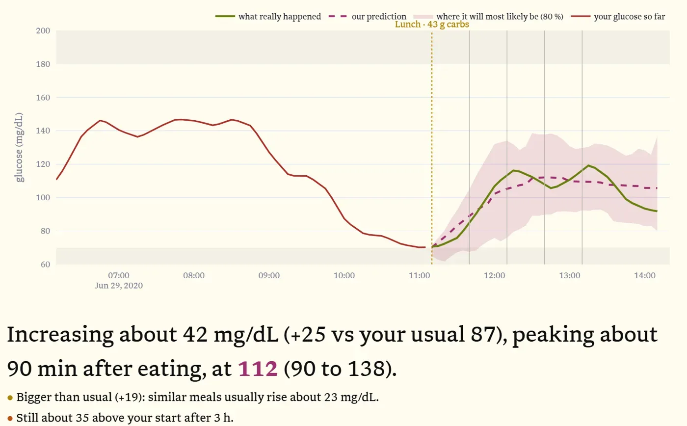

What will that meal do to your blood sugar?

What you can do
Predict a meal
Drop your glucose history and a meal, typed or from a photo. Get the next three hours with an honest band around it.
Predict a whole day
Plan meals, exercise and insulin, and see the day's peaks, lows and time in range.
Check us
Drop what really happened, one file or a whole folder. We score the prediction and learn from it.
How it works
The site's How it works page walks through every step on one real person, Sam, with his own data and charts. In short:
Read the plate
CLIP, an open image model, gives a phrase for the photo. The best phrases are matched to 5,200 USDA foods at a typical portion, and to meals you logged before that look the same.
Learn you first
A regression on your recent glucose, food, insulin and activity, fitted in three layers: everyone, people like you, then you. Your own data counts most once there is enough of it.
Say how sure we are
We replay your last 20 meals and size the band so about 8 in 10 of your real readings fall inside it.
More: cleaning and classification, how food and insulin reach the blood, the second model, and how we validate. Summary in the README; the full walk-through is in the app.
Results
On people the model never saw: learn from days 1 to 7, predict every meal from day 8 on, scored against the raw sensor.
| Typical miss (RMSE, mg/dL) | Truth inside the 80 % band | |
|---|---|---|
| Healthy, prediabetes, type 2 | 22.4 | 80 % |
| Type 1 | 41.6 | 82 % |
RMSE: the typical distance between the real readings and our predicted line. Type 1 is harder: logged carbs are rough, and insulin pumps react to glucose as it changes.
Try it
The whole site runs in your browser: the demo people, Meal, Full Day, Log and How it works. Python and the models load onto your device the first time (a minute or two), then everything runs locally.
Or run it on your own machine (faster, and reads food photos):
git lfs install git clone https://github.com/AlmostAPhysicist/HealthHack2026 cd HealthHack2026 pip install -r requirements.txt streamlit run app.py